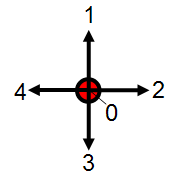
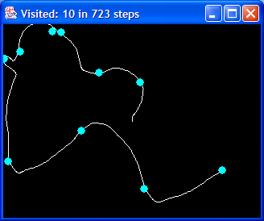

|  |
PTSP: The Physical Travelling Salesperson ProblemSimon M. Lucas
|
The travelling salesperson problem is one of the most widely studied optimisation problems, and there are a plethora of clever algorithms and meta-heuristics for finding good solutions. Close to optimal routes can now be found for problems involving thousands of cities. For an idea of the current state of the art see the DIMACS 8th TSP Implementation Challenge.
The objective in the standard TSP is to minimise the total distance travelled. The PTSP adds a simple twist that has far-reaching effects: the salesman has mass, and moves by choosing a force vector (see below) to apply to the mass at each point in time.
The objective now is to minimise the number of time steps taken to visit all the cities. If two solutions tie on this, the tie-breaker is the solution that uses the least force i.e. that minimises the number of non-zero force vectors. The screenshot below shows a sample run - this took 723 time steps (it is far from optimal!).

The problem is specified on a 2d grid. The input to your algorithm is a set of cities, each specified by it's x-y position. Each x-y city co-ordinate is an integer, using the standard VGA range (640 x 480). S.I. units are used for all measures; for screen display, 1 pixel corresponds to 1 meter.
The output of your algorithm is the selected x-y force to apply at each time-step. These forces are illustrated below. The co-ordinates have the screen interpretation of x: positive right; y : positive down.
|
|
The algorithm for checking a route is specified as follows:
Input: Set of cities, list of force vectors for each time step
Initialise position to INIT_POSITION
Initialise velocity to ZERO
for each force_t at each time step {
update position(force_t)
update velocity(force_t)
remove all cities touched by new position
}
Output is the set of remaining cities: for a valid solution, should be the empty set.
The reference simulation is implemented in Java using double precision arithmetic.
Source code available imminently (it's all written and here in this directory, but it also references other Java files elsewhere, which need to be added to a zip file)
Main files are here
The first line of the file is the number of cities, then each line is the x-y position of a city. For example, a five city problem might look like this:
5 120 3 100 100 340 250 345 470 567 345
A sample set of cities (for the above screen shot) is here.
A solution is a statement of the number of steps taken, followed by the selected force vector for each step: for example:
368 1 2 2 2 4 0 0 ...
A sample solution for the above set of cities is here.
Under construction. You will soon be able to upload your solutions to particular problem instances, and see them validated and ranked in a league table.
You might try solving it as a conventional TSP, then working out a set of force vectors that would steer that route. However, a glance at typical optimal TSP solutions indicate a high degree of curvature, which may be unlikely to form a good basis for PTSP solutions.
The physics model is simple, and similar to that used for the Cellz challenge for GECCO 2004, and also similar to XQuest, the classic MAC and PC game.
I had the idea for this problem while attempting the Crystal Collection Challenge for Crash Nitro Kart (I've still only managed to collect 16 out of the 20 crystals...).
I'd like to thank Edward Tsang and Mark Johnston for their feedback and encouragement on this idea.